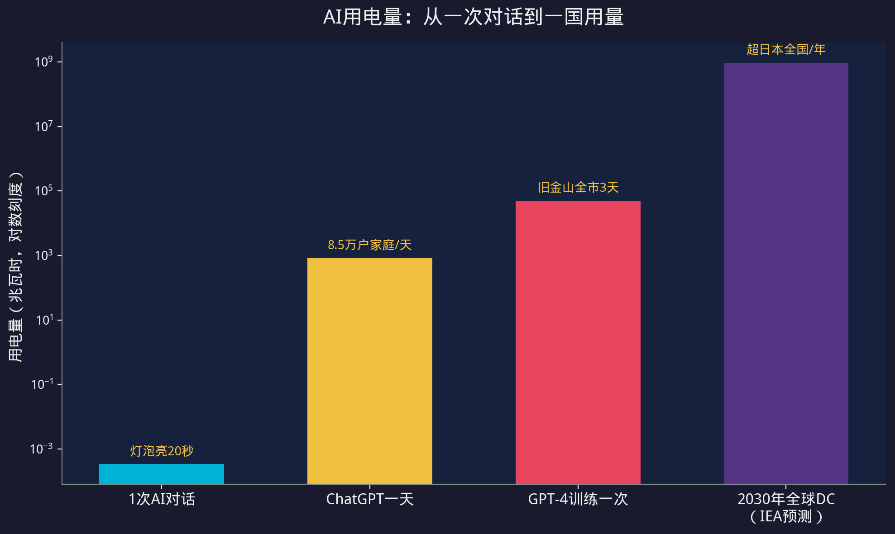
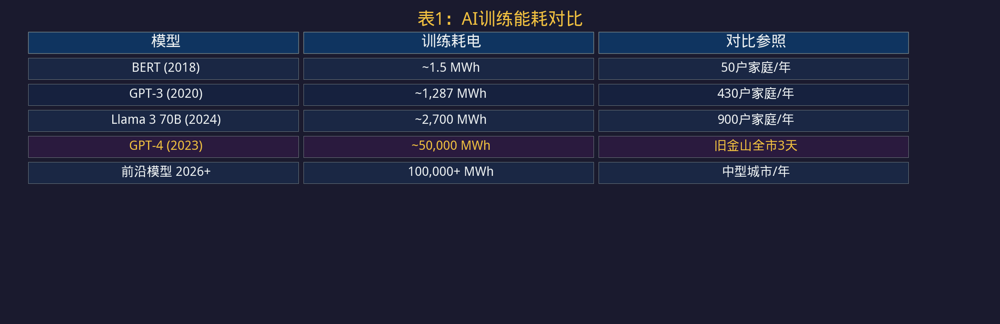
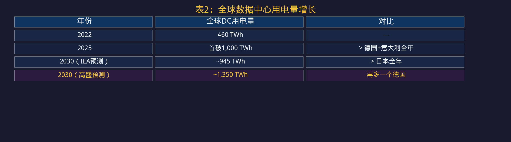
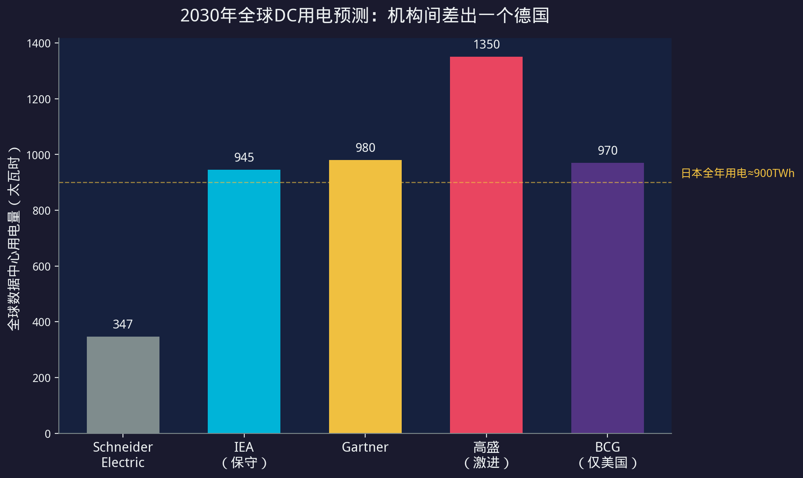
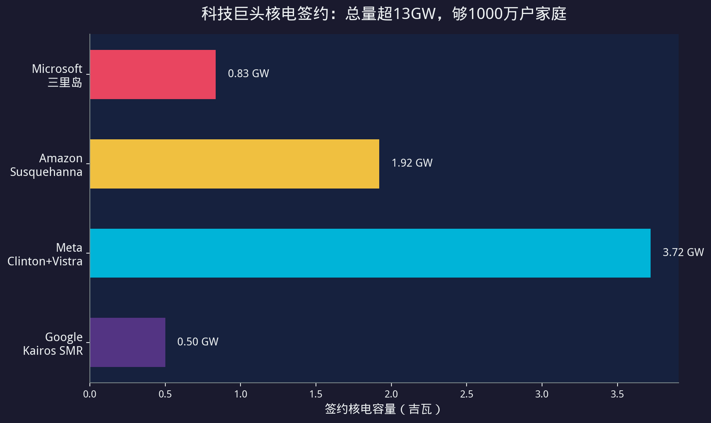
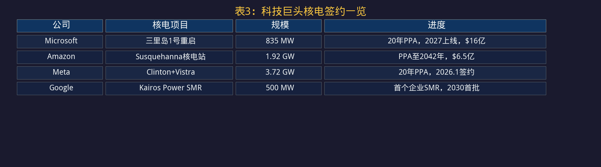
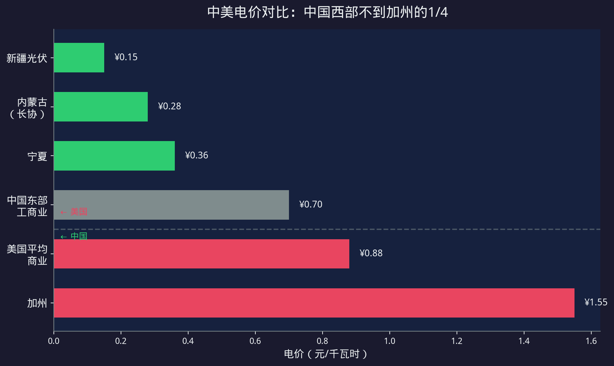
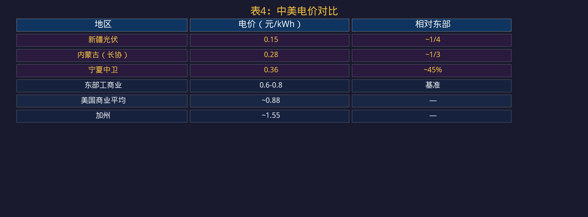
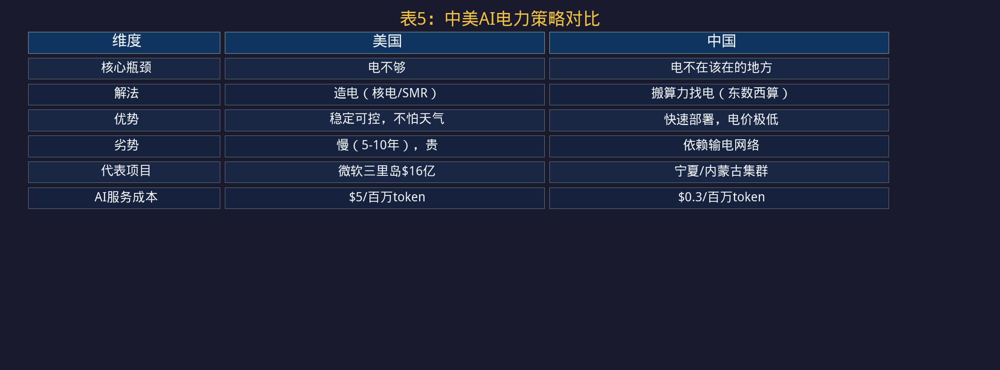
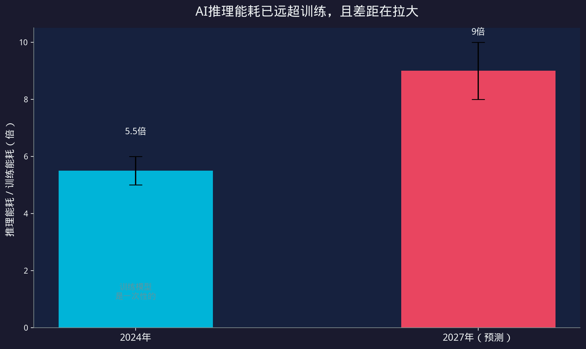

小K·AI行业数据分析 | 2026.06
AI电力 数据中心 能源 核电 东数西算
ChatGPT一天85万度电，全球数据中心用电量超德国+意大利。美国造电，中国搬算力，两条路谁走得通？
一、AI用电量阶梯每一次与AI对话，大概用0.34瓦时电——够一个灯泡亮20秒。
但ChatGPT一天要回答25亿次问题，加起来一天用掉85万度电，够8.5万户美国家庭用一天。
GPT-4训练一次，耗电5000万度，够旧金山全市用三天。三年前训练GPT-3只要130万度，三年能耗翻了40倍。


AI的竞争，表面比的是谁的模型强，底层比的是谁的电便宜。
二、电是AI最大的瓶颈2025年，全球数据中心用电量首次突破1000 TWh，超过德国+意大利两个国家一整年的用电量。AI专用数据中心用电量每年涨50%以上。

高盛今年5月报告：美国数据中心电力需求，2025年31 GW，2027年66 GW，两年翻一倍。但规划产能只有50%-60%能按时落地——不是不想建，是电不够。
中国这边，2025年数据中心用电约等于两座三峡的年发电量。到2030年预计等于四座三峡。

IEA预测945 TWh，高盛预测1350 TWh，差距超40%。核心分歧在于推理强度假设和项目落地率。但方向一致：电只会越来越不够用。
美国的问题很直接——电网扛不住了。
电不够，美国科技公司开始自己造电。


四家核电总签约：超过13 GW，够给1000万户家庭供电。
同一天（2026年6月24日），美国能源部宣布提供175亿美元贷款，支持5个项目共10座AP1000核反应堆。
核电站、小型模块化反应堆（SMR）、跟电力公司签20年长约——用资本和技术的密度硬砸。优势是稳定、可控、不怕天气。劣势是慢（建设周期5-10年）且贵（SMR首代电价是现有核电的3倍）。
四、中国的解法中国的问题不一样——不是电不够，是电不在该在的地方。
中国2025年发电量超过10万亿千瓦时，是美国的两倍多。2030年备用电力容量预计400 GW，是全球数据中心当前需求的3倍。总量绰绰有余。


中国的解法不是造电，是搬算力去找电。80%新增AI算力中心已经布局在西部。新建数据中心绿电占比要求不低于80%，PUE不高于1.25。
中国每百万token输入成本0.3美元，美国5美元，差16倍。核心不是模型能力，是电价。
把算力搬到西部去用便宜电。优势是快、便宜、绿电比例高。劣势是依赖输电网络——电在宁夏，用户在北京，中间要靠特高压。跨省调度、储能配套、高峰时段调配，都不是简单的事。
五、两条路
Carbon Brief算过一笔账：全球层面，数据中心目前只占用电的1.5%，新增用电里AI占比还不如电动车和空调。全球总量不是问题，问题在局部——某个城市、某个州、某个电网，压力是爆表的。
两条路不是谁对谁错，是各自适配各自的瓶颈。
六、推理量爆发训练一个模型是一次性的电费，但让模型回答问题是持续的。OpenAI自己说，AI推理能耗已经是训练的5到6倍，2027年会到8到10倍。

如果AI从聊天工具变成每个人的工作助手，推理量会呈指数级增长。到那时候，不管你是造电还是搬算力，都可能不够用。
那个"超过日本全国年用电量"的预测，可能还是保守了。
AI的竞争，表面看是模型参数和算力的较量。但往底层扒一层，比的是电。
谁先把电的问题解决，谁就能跑更密集的推理、训练更大的模型、服务更多的用户。电价每便宜一分钱，AI服务成本就降一分钱，边际利润就厚一分钱。
美国的2毛2美元和中国的2毛8之间，隔的不只是汇率换算，是两种完全不同的思路——一个用资本密度造电，一个用资源调度用电。
下一个十年的AI赢家，可能不是算法最强的那家，而是电最便宜的那家。
免责声明：本内容依据公开信息与财报数据，仅对产业经营层面梳理，不构成任何投资建议。
延伸阅读本文聚焦AI的电力成本与中美策略对比。如果你想了解AI算力投资中钱流向哪里——7250亿资本支出的逐层拆解，请看：《AI算力的钱流向哪里？7250亿资本支出拆解》
参考来源| 数据点 | 来源 |
|---|---|
| IEA全球DC用电量 | IEA 2026.04 |
| 高盛美国DC用电 | 东方财富/高盛 2026.06 |
| 卡内基核电签约 | 卡内基 2026.06 |
| 美国能源部核电贷款 | 新浪财经 2026.06.24 |
| 中国AI产业电力成本 | 新浪BigNews 2026.03 |
| Carbon Brief数据中心能源 | Carbon Brief 2025.09 |
| Luminix电网分析 | Luminix 2026.04 |
| 电网瓶颈数据 | Informed Clearly 2026.05 |
| AI训练能耗对比 | howtostoreelectricity.com 2026.01 |
| 推理vs训练能耗 | Goldman Sachs/IEA 2026.02 |
| 中国DC用电数据 | hailianxin.cn 2026.06 |
| 宁夏电价数据 | cwese.com 2026.06 |
本内容由 Coze AI 生成，请遵循相关法律法规及《人工智能生成合成内容标识办法》使用与传播。
本内容由 Coze AI 生成
← 返回首页